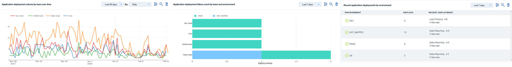

Report overview
Reports provide deployment metrics about your continuous delivery process. Giving you insights into how efficient the deployment processes and resources are performing.
The historical information contained in a report is dependent on the parameters selected for the report. For example, you may elect to gather only data about deployment duration and volume over time or deployment failure rate by application and environment or both. The data provided in a report is aggregated from the UrbanCode Deploy servers that are integrated with UrbanCode Velocity.
There are several predefined reports which are ready to use after installation and setup has been completed. You can modify the predefined reports or create your own based on your requirements.
-
Audit
Use this report to prepare for an audit or to answer an auditor's questions and requests, such as:
- Where was application ABC deployed last quarter?
- Show me all deployments to production last month .
- Custom
Use this report to gather any type of information about your pipeline. Large amounts of data are presented in a custom report based on defined criteria. You can provide focus to a specific area by using filters, for example:
- Find teams that are more error prone when deploying to production.
- Identify which business units are the biggest customers.
- Monitor a critical application to show all of its activity.
- Delivery Transformation
Use this report to show the history of key deployment metrics over time and changes over time, for example:
- Map DevOps processes changes to deployment trends and track improvements over a time frame.
- View statistics about deployment duration and volume over time.
- Gather statistics about deployment failure rate by application and environment.
- Recent Activity
Use this report to view changes that occurred recently. The default is the latest twenty-four hours, however; the time frame can be set need time frame.
- View changes that occurred over time away .
- Team Performance
Use the team performance report to compare one or all of teams that you are a member performance against other teams in the organization.
-
Compare the average time it took for deployments within a 90 day cycle period.
- Compare a single team deployment frequency against another team.
Report data is displayed using line graphs, bar graphs, or tables. The format presented is dependent on the data being displayed. Hovering your pointer in various points in the line and bar graphs displays data details. 
Parent topic: Overview